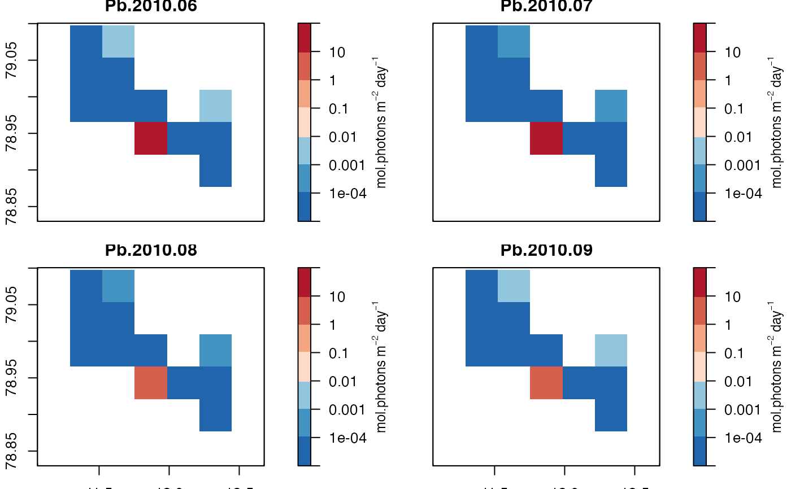

FjordLight.R/flget_PARbottomMonthlyTS.R
flget_PARbottomMonthlyTS.RdThis functions will extract the monthly bottom PAR data stored within a
NetCDF file downloaded via fl_DownloadFjord. Note that these data are
very large. If one would prefer to work with the smaller annual or monthly climatology
values, instead use flget_climatology. There are options for how the user
would like to subset the data, which data format the data should be extracted to,
and if the user would like to plot the data in the process.
flget_PARbottomMonthlyTS(
fjord,
month = NULL,
year = NULL,
mode = "raster",
PLOT = FALSE
)Expects the object loaded via fl_LoadFjord. NB: when loading
the data one must set the argument fl_LoadFjord(..., TS = TRUE). See examples below.
The monthly values to extract. Accepts one or many integer values from 3 to 10.
If no values are provided, the default value of NULL will be passed to the function,
telling it to load all available months of data (i.e. 3:10).
This is used in combination with year to determine which monthly data to extract.
The years of data to extract. Currently accepts one or many integer values from 2003 to 2022.
If no values are provided, the default value of NULL will be passed to the function,
telling it to load all available years of data (i.e. currently 2003:2022).
This is used in combination with month to determine which monthly data to extract.
Determines the format of the data loaded into the R environment.
The default "raster" will load the data as a raster format. The other option "df"
will load the data as a data.frame with three columns.
Boolean argument (default = FALSE) that tells the function if the user
would like the loaded data to be plotted or not.
Depending on which arguments the user chooses, this function will return the
chosen monthly bottom PAR data as a RasterStack (mode = "raster")
or data.frame (mode = "df"). The data.frame will contain the following columns:
degree decimals
degree decimals
mol photons m-2 d-1
# Load ALL data
fjord_code <- "test"
fjorddata <- fl_LoadFjord(fjord_code,
dirdata = system.file("extdata", package = "FjordLight"), TS = TRUE)
# Load a small subset as a data.frame
mts_single <- flget_PARbottomMonthlyTS(fjorddata, month = 6, year = 2016, mode = "df", PLOT = FALSE)
# Years 2003 to 2004 - months July to August
# NB: This may be too large for smaller laptops
mts_many <- flget_PARbottomMonthlyTS(fjorddata, month = 7:8, year = 2003:2004, PLOT = FALSE)
# May also plot the data
# \donttest{
mts_plot <- flget_PARbottomMonthlyTS(fjorddata, month = 6:9, year = 2010, PLOT = TRUE)

# }
# For more examples: https://face-it-project.github.io/FjordLight/articles/fl_example.html